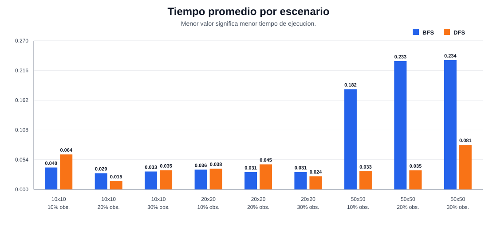
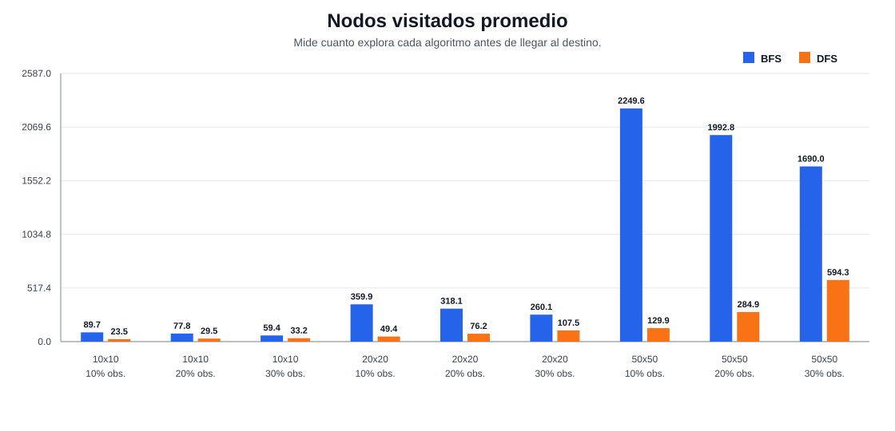
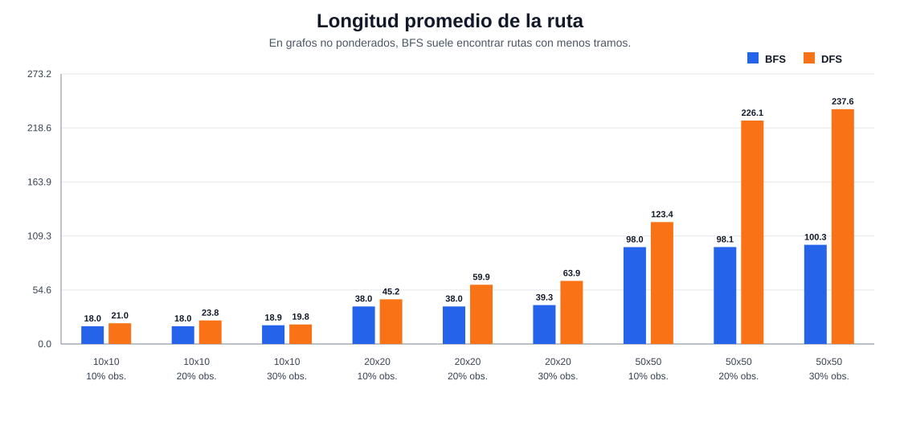
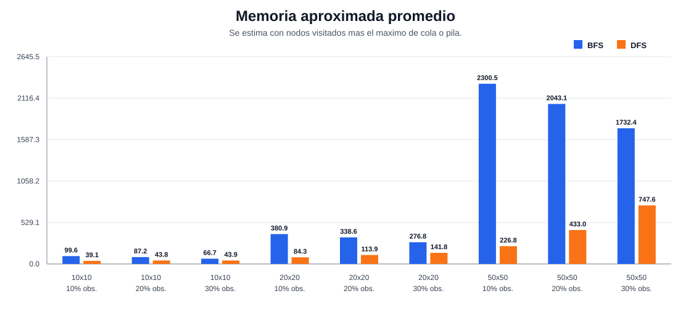

Escenarios evaluados
9BFS con ruta igual o menor
9 de 9DFS con menor tiempo
5 de 9DFS con menos nodos visitados
9 de 9



Tabla resumen
| Escenario | Algoritmo | Tiempo prom. | Nodos prom. | Ruta prom. | Memoria prom. |
|---|---|---|---|---|---|
| 10x10 - 10% | BFS | 0.0397 ms | 89.7 | 18.0 | 99.6 |
| 10x10 - 10% | DFS | 0.0636 ms | 23.5 | 21.0 | 39.1 |
| 10x10 - 20% | BFS | 0.0294 ms | 77.8 | 18.0 | 87.2 |
| 10x10 - 20% | DFS | 0.0152 ms | 29.5 | 23.8 | 43.8 |
| 10x10 - 30% | BFS | 0.0325 ms | 59.4 | 18.9 | 66.7 |
| 10x10 - 30% | DFS | 0.0348 ms | 33.2 | 19.8 | 43.9 |
| 20x20 - 10% | BFS | 0.0359 ms | 359.9 | 38.0 | 380.9 |
| 20x20 - 10% | DFS | 0.0377 ms | 49.4 | 45.2 | 84.3 |
| 20x20 - 20% | BFS | 0.0313 ms | 318.1 | 38.0 | 338.6 |
| 20x20 - 20% | DFS | 0.0454 ms | 76.2 | 59.9 | 113.9 |
| 20x20 - 30% | BFS | 0.0315 ms | 260.1 | 39.3 | 276.8 |
| 20x20 - 30% | DFS | 0.0238 ms | 107.5 | 63.9 | 141.8 |
| 50x50 - 10% | BFS | 0.1816 ms | 2249.6 | 98.0 | 2300.5 |
| 50x50 - 10% | DFS | 0.0330 ms | 129.9 | 123.4 | 226.8 |
| 50x50 - 20% | BFS | 0.2326 ms | 1992.8 | 98.1 | 2043.1 |
| 50x50 - 20% | DFS | 0.0346 ms | 284.9 | 226.1 | 433.0 |
| 50x50 - 30% | BFS | 0.2344 ms | 1690.0 | 100.3 | 1732.4 |
| 50x50 - 30% | DFS | 0.0810 ms | 594.3 | 237.6 | 747.6 |